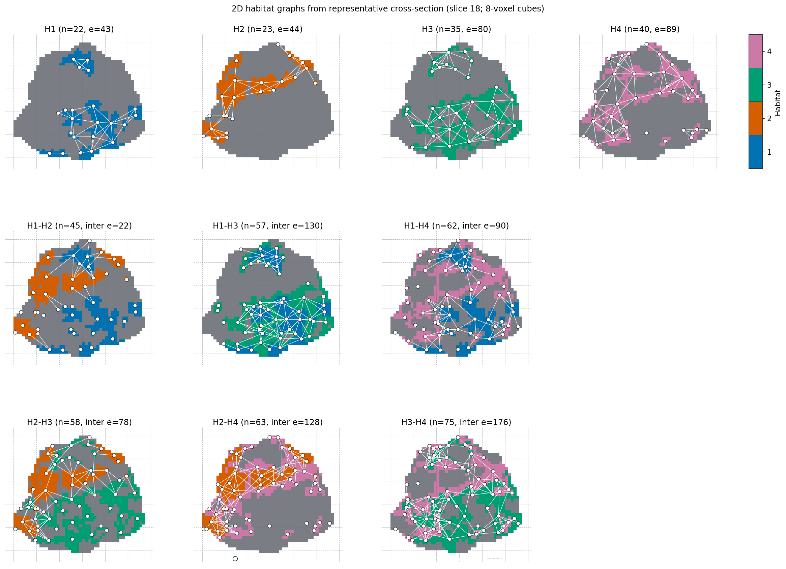

Graph topology features
Goal: extract built-in habitat graph topology features (nodes / edges / metrics) from habitat label maps, optionally with 2D/3D figures.
Need habitat maps first (Habitat segmentation (CLI / YAML)). This page is the CLI / YAML bookmark. End-to-end Python gallery: Graph features. Reviewer-grade formulas: Graph topology features.
graph is a built-in light family under
Features from habitat maps (same tier as volume / msi /
ith_score). Prefer the domain / public API; habit.compat graph shims
are deprecated transitional loaders.
CLI / YAML
The shipped extract YAMLs already list graph in the default light
feature_types. Optionally tune a top-level graph: block (validated
as GraphFeatureBlock). One
physical line per shell command (Windows / conda PowerShell):
habit extract --config path/to/your_extract_with_graph.yaml
Minimal YAML fragment:
feature_types:
- volume
- graph
graph:
edge_method: min_distance
distance_threshold: 5.0
node_method: uniform_grid
block_size: 8
block_min_coverage: 0.2
connectivity: full
erosion_radius: 0
include_single_habitat_graph: true
include_pairwise_habitat_graph: true
include_extended_metrics: true
visualize: false
visualization_show_grid: true
visualization_block_size: null
visualization_grid_linestyle: "--"
Outputs:
habitat_graph_features.csvunderout_dirwhen
graph.visualize: true, optional figures underout_dir/visualizations/graph/(2D needs[viz]; 3D also needs[view])
By default nodes sit at per-cell subregion centroids on a global
VOI lattice (node_method: uniform_grid, block_size: 8
voxels, not millimetres). A cube is kept when its occupied fraction
exceeds block_min_coverage (default 0.2); each connected habitat
fragment inside that cube becomes its own node. An edge exists when
the closest voxels of two nodes are within 5 voxel-index units
(edge_method: min_distance, distance_threshold: 5).
Face-adjacent 8-cubes connect (closest voxels are one hop apart). One
empty lattice cell between cubes is closest-voxel distance about 8,
which is greater than 5, so those stay disconnected. There is no morphological
erosion (erosion_radius: 0).
Pass node_method: component for connected-component nodes, and
edge_method: adjacency if you want contact-voxel edges (default
contact count >= 10). centroid_distance is the older centroid-proximity
rule. 2D figures draw the same lattice as dashed lines. On each
featured-habitat panel only that habitat is filled in colour; white
nodes and white intra-edges are overlaid (mid-dark gray backdrop so
white strokes stay visible; no light-gray other-habitat fill). Each
unordered habitat pair has its own panel with those two fills in
palette colours and white inter-edges between that pair only.
Parameter reference: Feature Extraction Configuration.
Python API
The figure below is written by the graph gallery
(Graph features) — one-step with fixed
n_habitats=4 and the library graph defaults (uniform 8-voxel cubes
with per-subregion centroid nodes + min-distance edges + dashed
lattice). Reproduce it:
python docs/source/examples/scripts/graph_features_demo.py
Or paste the same code the gallery shows:
from habit.contracts import cohort_from_directory
from habit.datasets import fetch_demo
from habit.kernels import HabitatGraphFeatureOptions, extract_graph_features
from habit.recipes import one_step_habitat
from habit.viz import plot_habitat_graph_network_2d, plot_habitat_graph_slice
DATA = fetch_demo()
MODALITIES = ("LAP",)
ROI = "LAP"
cohort = cohort_from_directory(DATA, modalities=MODALITIES, roi=ROI)[:1]
result = one_step_habitat(
modalities=MODALITIES, n_habitats=4, random_seed=0, roi=ROI
).fit_predict(cohort)
labels = result.habitat_maps[0].label_array
options = HabitatGraphFeatureOptions()
# Extended metrics (efficiency / Humphries sigma / rich-club) are on
# by default. Pass include_extended_metrics=False to omit. Default
# small-world null is analytic ER; pass graph_null_sampler='config'
# or 'rewire' to replace it (not add a second column). See the
# reference page.
# Full 3D map for features; the 2D network below is display-only.
feats = extract_graph_features(labels, options=options)
fig = plot_habitat_graph_slice(
labels, options=options, show_grid=True, block_size=8, grid_linestyle="--"
)
fig = plot_habitat_graph_network_2d(
labels, options=options, show_grid=True, block_size=8, grid_linestyle="--"
)
Stream the same options through a one-step Report
so each completed subject writes graph_slice.png and
graph_network_2d.png (2D display-only; metrics stay 3D):
from dataclasses import asdict
from habit.adapters import DirectoryResultWriter
from habit.kernels import HabitatGraphFeatureOptions
from habit.report import GraphNetwork2D, GraphSlice, Report
graph = HabitatGraphFeatureOptions(edge_method="min_distance", block_size=8)
writer = DirectoryResultWriter("out/study")
# Spec("graph", asdict(graph)) on the quantify stage, then:
report = Report(
figures=(GraphSlice(options=graph), GraphNetwork2D(options=graph)),
figure_layout="by_subject",
writer=writer,
)
Full walkthrough: One-step habitat analysis (Stream per subject).
Optional: other HabitatGraphFeatureOptions(...) fields, registry
HabitatFeatureExtractorRegistry.create("graph", ...), and 3D
render_habitat_graph_network_3d() /
render_habitat_graph_surface_3d() (needs [view]).
Small-world \(\sigma\) and random-graph nulls
Formulas, the three nulls, and the papers to cite: Graph topology features (Small-worldness and random-graph nulls). Short map:
graph_null_sampler='analytic'(default) — Humphries S versus an Erdős–Rényi graph with the same \(n\) and \(m\) (closed-form \(C_{\mathrm{rand}}\), \(L_{\mathrm{rand}}\)).'config'— configuration model (keep the degree sequence; stub matching).'rewire'— Maslov–Sneppen double-edge swaps (NetworkXsigma/random_reference).
These are alternative random-graph references, not three extra
features. One small_world_sigma column; changing the sampler
replaces the number. Habitat maps are spatial: none of the three
nulls preserve voxel geometry.
Degree-preserving null-model API
Use a null model only for topology metrics whose interpretation must control
for the degree sequence; it is not a normalization for physical contact,
distance, dispersion, or node-volume features. The result records the
requested and successful random graphs, so inspect is_valid before using
the Z score:
import networkx as nx
import numpy as np
from habit.kernels import (
GraphNullModelOptions,
build_min_distance_graph,
compare_graph_to_degree_preserving_null,
extract_habitat_nodes,
)
# Swap in a HabitatMap.label_array from the previous block when you have one.
labels = np.zeros((16, 16, 16), dtype=np.int32)
labels[2:14, 2:14, 2:14] = 1
labels[6:10, 6:10, 6:10] = 2
nodes = extract_habitat_nodes(
label_array=labels,
node_method="uniform_grid",
block_size=8,
block_min_coverage=0.2,
)
graph = build_min_distance_graph(
node_result=nodes,
labels=(1,), # Compare topology of habitat 1.
graph_kind="single",
distance_threshold=5.0,
)
result = compare_graph_to_degree_preserving_null(
graph,
nx.average_clustering,
options=GraphNullModelOptions(
n_random_graphs=200,
sampler="rewire",
swaps_per_edge=100,
random_seed=42,
),
)
if result.is_valid:
print(result.observed, result.z_score, result.empirical_two_sided_p)
The random graphs preserve each node’s degree, total nodes, and total edges, but do not preserve components, physical coordinates, distances, contacts, or habitat labels. See Graph topology features for the list of features for which this reference is appropriate and the reporting limits.
{kind=link}

Same file the gallery script writes to out/graph_habitat_network_2d.png.
Features come from the full 3D map; this 2D network is display-only.
The gallery also compares the same 3D maps at block_size=5.
Also see
General extract how-to: Feature extraction (CLI / YAML)
Examples gallery: Graph features
Feature columns: Graph topology features